Next: Programs for Graphical display Up: McPhase USERS MANUAL Previous: Formalism for going beyond Contents Index
This is based on an extension of the theory published by Klaus W. Becker, Peter Fulde and
Joachim Keller in Z. Physik B 28,9-18, 1977
"Line width of crystal-field excitations in metallic rare-earth systems"
(for details see appendix N).
Here we give an introduction to the computer program bfk for the calculation of the neutron
scattering cross section. The computer program bfk is written by J. Keller,
University of Regensburg.
Description of the program:
The program calculates the dynamical susceptibility and the neutron scattering cross-section of single RE ions in the presence of crystal fields and Landau damping due to the exchange interaction with conduction electrons.
It needs the following input-files (not all are needed for all tasks)
1. A file containing the information about the RE ion: Type of ion, number of CF-levels, energy eigenvalues and eigenstates. The date are extracted from the input-file by reading the information contained in lines starting with or blanks, see the attached example.
2. File with the formfactor data for RE ion
3. File with a list of (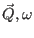)-values, for which the calculation shall be performed
4. A parameter-file containing the names of the files with the formfactor, the table with the ()-values, the energy range, scattering direction etc., see the attached example.
5. The value of the coupling constant 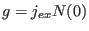, the temperature, the mode of calculation, the form of the out-put, the name of the file with the CEF-data, the name of the parameter file are provided by the commandline, which is used to start the program.
The program consists of a number of modules and subroutines which are briefly described in the following:
1. Modules CommonData, MatrixElements, FormfactorPreparation
These modules contain definitions of global variables and arrays used in the program and in different subroutines. FormfactorPreparation also contains the subroutine FormfactorTransformation which transforms an input-file with formfactor data into a file with formfactor values for equidistant Q-values. and the function Formfac to calculate the formfactor at arbitrary Q-values.
2. Subroutine ReadData
Subroutine to read-in data needed to calculate the dynamical susceptibility and the neutron scattering cross-section.
It reads the commandline, containing the coupling ,
the temperature  (in Kelvin), mode of calculation (see below), form of out-put,
name of the
file with RE data, name of the parameter-file (containing also the name of
the file with the formfactor data). The information about the RE ion is
transferred into a workfile cefworkfile.dat for inspection and use in the
following runs. The data contained in the parameter-file are stored in the
file bfkdata.dat. The latter two have to be given only in the first run. If
they are left-out in the following runs, the are assumed to be
unchanged.
(in Kelvin), mode of calculation (see below), form of out-put,
name of the
file with RE data, name of the parameter-file (containing also the name of
the file with the formfactor data). The information about the RE ion is
transferred into a workfile cefworkfile.dat for inspection and use in the
following runs. The data contained in the parameter-file are stored in the
file bfkdata.dat. The latter two have to be given only in the first run. If
they are left-out in the following runs, the are assumed to be
unchanged.
3. Subroutine Matrixelements
a) Calculates angular momentum matrices jjx, jjy, jjz for the crystal-field eigenstates (2-dim arrays, dimension Ns x Ns). The three directional components are also stored in the 3-dimensional array jjj(3,Ns,Ns).
b) Calculates Boltzmann-factors 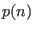. A cut-off in the exponent 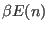 is introduced such that Boltzmann factors with large negative exponents are set equal to zero.
c) Defines a set of transitions  between states
n1 and n2, stored in two 1-dim
arrays v1(
between states
n1 and n2, stored in two 1-dim
arrays v1( ), v2(
), v2( ). If both Boltzmann factors of the two states
involved are zero, this transition is eliminated from the set of allowed
transitions.
). If both Boltzmann factors of the two states
involved are zero, this transition is eliminated from the set of allowed
transitions.
d) Calculates static suscepibilities 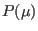 for the standard basis operators 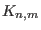 for the allowed transitions.
e) All these reults are stored in a file bfkmatrix.dat for examination, if something goes wrong.
4. MatrixInversionSubroutine
adapted from Numerical Recipes, to be used for the inversion of the complex matrix 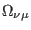. Called by 5.
5. Subroutine Relmatrix
Calculates the matrix relaxation function
 for the set
of dynamical variables
obtained from the standard basis operators for a given energy (freqency)
for the set
of dynamical variables
obtained from the standard basis operators for a given energy (freqency)
 .
.
6. Subroutine Suscepcomponents
Calculates the different components of the
dynamical susceptibility
Calculates
8. Subroutine OutputResults
Here the results for the dynamical susceptibility, the scattering function and the differential neutron scattering cross section for different scattering geometries are calculated, and the results written into files bfkm.res for different scattering-modes m=0-6, which are written into the subdirectory /results. Depending on the value of ms=1,2 the new results over-write the previews results or append.
Depending on the number m=0-6 (3. entry of the commandline) the following results are calculated.
mode=0: all nine components
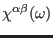 of the complex
dynamic susceptibility are calculated for 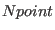 equidistant energies  between 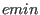 and 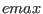.
between 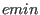 and 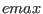.
mode=1: the diagonal components of
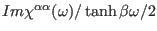
are calculated and the frequency integral is compared with the sum-rule
mode=2: The scattering function
mode=3: The 9 different components of the scattering-function
mode= 4-6: the neutron scattering cross section
is calculated for different scattering geometries: In mode 4 the direction of the wave vector 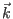 and the energy 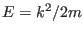 of the incident beam is fixed. The direction of the scattering wave vector is fixed, but the length of is variable. The wave vector of the scattered particles is 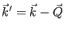, their energy is 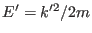 and the energy loss is 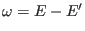. In mode 5 the direction of the wave vectors and 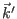 of the incoming and scattered beam are fixed, while the energy 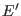 of the scattered beam is variable. In mode 6 the energy 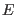 of the incident particles is variable and the energy 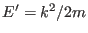 of the scattered particles fixed.
How to run the program:
The translated program is started with a command-line
like
bfk 0.1 10 0 1 prlevels.cef paramfile.par
with the following structure:
name of the program: bfk; coupling constant g; temperature T (in K); type of calculation: mode =1...6; type of output: mst=1 overwrite, mst=2 append new results; name of file with RE ion data; name of parameter file.
The last two entries can be skipped in later runs, if they are not changed.
The mode number mode = 1 ...6 refers to the subject of calculation. The output- number mst=1,2 refers to the type of output-storage.
The file with RE data should have the form produced by sol1on (see the attached example).
The
lines starting with numbers or blanks contain information, the lines
starting with # are commentaries, the lines starting with #! also carry
information.
The parameterfile contains additional parameters needed to run the program:
energy range and number of energy values. Energies of incident or scattered
particles, direction of incident or scattered particles.
mode=4: E energy of incident particles, k11,k12,k13 direction if incident particles (vector with arbitrary length), k21,k22,k23 direction of scattered particles.
mode=5: E energy of incident particles, k11,k12,k13 direction if incident particles (vector with arbitrary length), k21,k22,k23 direction of scattering vector .
mode =6: E energy of scattered particles, k11,k12,k13 direction if incident particles (vector with arbitrary length), k21,k22,k23 direction of scattered particles.
The parameterfile also contains the namme of a file with a list of
scattering vectors and energy loss ( ) needed for mode
2,3
) needed for mode
2,3
Finally it contains the name of a file with the formfactor of the ion.
J. Keller, May 2013